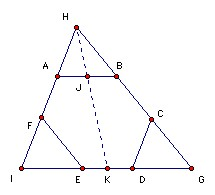
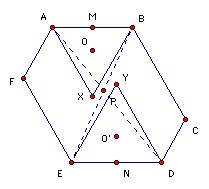
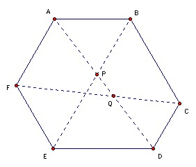
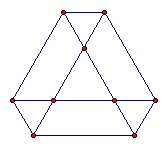

A convex hexagon has the property that for any pair of opposite sides the distance between their midpoints is ½ √3 times the sum of their lengths. Show that all the hexagon's angles are equal.
Solution
Thanks to Li Yi
We use bold to denote vectors, so AB means the vector from A to B. We take some arbitrary origin and write the vector OA as A for short. Note that the vector to the midpoint of AB is (A + B)/2, so the vector from the midpoint of DE to the midpoint of AB is (A + B - D - E)/2. So the starting point is |A + B - D - E| ≥ √3 ( |A - B| + |D - E| ) and two similar equations. The key is to notice that by the triangle inequality we have |A - B| + |D - E| ≥ |A - B - D + E| with equality iff the opposite sides AB and DE are parallel. Thus we get |DA + EB| ≥ √3 |DA - EB|. Note that DA and EB are diagonals. Squaring, we get DA2 + 2 DA.EB + EB2 ≥ 3(DA2 - 2 DA.EB + EB2), or DA2 + EB2 ≤ 4 DA.EB. Similarly, we get EB2 + FC2 ≤ 4 EB.FC and FC2 + AD2 ≤ 4 FC.AD = - 4 FC.DA. Adding the three equations gives 2(DA - EB + FC)2 ≤ 0. So it must be zero, and hence DA - EB + FC = 0 and opposite sides of the hexagon are parallel.
Note that DA - EB + FC = A - D - B + E + C - F = BA + DC + FE. So BA + DC + FE = 0. In other words, the three vectors can form a triangle.

Since EF is parallel to BC, if we translate EF along the vector ED we get CG, an extension of BC. Similarly, if we translate AB along the vector BC we get an extension of ED. Since BA, DC and FE form a triangle, AB must translate to DG. Thus HAB and CDG are congruent. Similarly, if we take AF and DE to intersect at I, the triangle FIE is also congruent (and similarly oriented) to HAB and CDG. Take J, K as the midpoints of AB, ED. HIG and HAB are equiangular and hence similar. IE = DG and K is the midpoint of ED, so K is also the midpoint of IG. Hence HJ is parallel to HK, so H, J, K are collinear.
Hence HJ/AB = HK/IG = (HK - HJ)/(IG - AB) = JK/(AB + ED) = ½ √3. Similarly, each of the medians of the triangle HAB is ½ √3 times the corresponding side. We will show that this implies it is equilateral. The required result then follows immediately.
Suppose a triangle has side lengths a, b, c and the length of the median to the midpoint of side length c is m. Then applying the cosine rule twice we get m2 = a2/2 + b2/2 - c2/4. So if m2 = ¾ c2, it follows that a2 + b2 = 2c2. Similarly, b2 + c2 = 2a2. Subtracting, a = c. Similarly for the other pairs of sides.
An alternative (and rather more elegant) solution sent my some anonymous contestants at the IMO is as follows

Let the diagonals AD and BE meet at P. We show that angle APB <= 60o. Suppose angle APB > 60o. Take X and Y inside the hexagon so that ABX and DEY are equilateral (as shown). Then since angle APB > angle AXB, P lies inside the circumcircle of ABX (which we take to have center O, radius r). Similarly, it lies inside the circumcircle of DEY (which we take to have center O' radius r'), so these circles must meet and hence OO' < r + r'. Now √3 (AB + DE)/2 = MN (where M, N are the midpoints of AB, DE) ≤ MO + OO' + O'N < r/2 + (r + r') + r'/2 = (3/2)(r + r') = √3 (AB + DE)/2. Contradiction.
The same argument applies to any two long diagonals. Hence the angles must all be 60o. Also we must have MP ≤ MX with equality iff P = X, and similarly NP ≤ NY with equality iff P = Y. So MN ≤ MP + PN ≤ MX + NY = √3 (AB + DE)/2 = MN. Hence we have equality and so P = X = Y.

Hence angle APB = 60o. Suppose AD and CF meet at Q. The same argument shows that angle AQF = 60o. So the hexagon angle at A is angle APB + angle AQF = 120o. Similarly for the other angles.
Finally, note that the only possible configuration is:

The ratio AB/BC is arbitrary, but the figure is symmetrical under rotations through 120o. That follows immediately from either of the two solutions above.

© John Scholes
jscholes@kalva.demon.co.uk
24 Jul 2003
Last corrected/updated 27 Jul 2003